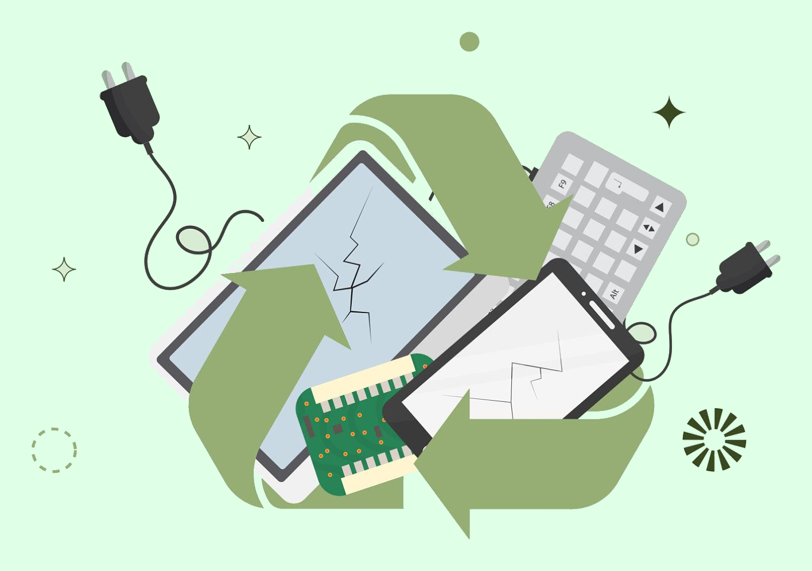

Como funciona?
Entenda as etapas para coletar, armazenar e encaminhar equipamentos eletrônicos de maneira segura e consciente.
Saiba mais →Criado com fins educativos para alertar sobre o descarte correto de eletrônicos. Torne o descarte da sua comunidade cada vez mais responsável e consciente.

Entenda as etapas para coletar, armazenar e encaminhar equipamentos eletrônicos de maneira segura e consciente.
Saiba mais →Conheça a importância dos pontos de coleta e descubra onde realizar o descarte correto dos seus eletrônicos.
Encontrar pontos →Algumas dúvidas sobre como ocorre o descarte eletrônico e por qual motivo tudo é feito. Se encontram no final da página contato
Veja as questões →